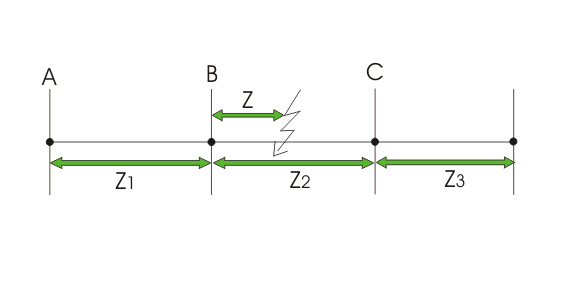

The time graded and pilot wire protections are not economical and suitable for long high voltage transmission line. Time graded over electric current protection of line gives very long fault clearance time at the source end. Again for very long transmission line and when sections of line become more than four, the pilot wire system becomes much expensive. These lead to develop distance protection of transmission line where the relay is operated depending upon the ratio of voltage to electric current in the line. As this relay is operated depending upon voltage to electric current ratio, i.e. impedance [as impedance = voltage / current] it is also referred as impedance relay.
Let us understand basic principle of distance protection of electrical transmission system.
Assume power flows from electrical substation A to B and B to C and C to .....

The distance relay at substation A is set for impedance Z1, the distance relay at substation B is set for impedance Z2 and relay at substation C is set for impedance Z3. The relays A, B and C will operate for the impedance was less than Z1, Z2 and Z3 respectively.
Suppose fault is occurred at point F, between substation B and C. The impedance of the line from substation A is Z1 + Z and from substation B it is Z only. As Z1 + Z > Z1 the distance relay at substation A will not be operated but as Z < Z2, the distance relay at substation B will be operated to clear this fault.
In this scheme of distance protection, instantaneous relay can ideally be applied. But practically it is difficult to achieve proper protection of system by instantaneous relay because of mismatching of relay elements and instrument transformer accuracies in different sub-station. Thus the relay at substation A would not be very reliable in distinguishing between a fault at 99% of the distance AB and the one at 101% of the distance AB. This difficulty can easily be overcome by using three zone distance protection scheme.
In this scheme of protection, three elements are used at each terminal. The zone-1 element covers first 80% of the line. If any fault occurs within 80% of the total line length, Z – 1 element instantaneously trip the Circuit Breaker at point A.
If any fault occurs within rest 20% of the line length, Z – 2 element trip the CB at point A. But Z – 2 element is not instantaneous in nature it will have some time delay. In addition to 20% of the line length it also covers next line section. The intentional time delay is provided to Zone – 2 element for preventing the CB at point A from being tripped if the fault occurs in the next section. The CB at point A should trip for fault in next section, only when its won CB can not operate. Here, Zone – 2 element behaves as back up protection for next section. The Zone – 3 element covers rest of the line and only provides back up protection to entire next position of line.
 by
by